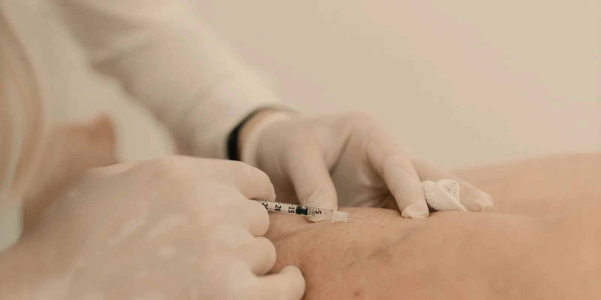

Escleroterapia: en qué consiste el tratamiento de várices
Si te incomodan tus várices o arañitas vasculares, seguro has escuchado hablar de la escleroterapia. Aquí te contamos, con calma y sin tecnicismos, cómo funciona este tratamiento, qué esperar de la recuperación y cuándo tiene sentido consultarlo con un especialista vascular.

La escleroterapia es uno de los tratamientos más usados en el mundo para las várices pequeñas y las arañitas vasculares. Se trata de un procedimiento ambulatorio y relativamente sencillo, que consiste en inyectar una solución esclerosante directamente en la vena afectada para ayudar a que se cierre y, con el tiempo, se vuelva menos visible. Si te preocupan las líneas rojizas o azuladas en tus piernas, o sientes pesadez y cansancio, esta puede ser una de las opciones que te mencione tu especialista.
¿Qué es la escleroterapia y cómo funciona?
En términos sencillos, consiste en aplicar, con una aguja muy fina, una solución dentro de la vena problemática. Esa solución irrita su pared interna y hace que las paredes se peguen entre sí. Con el paso de las semanas, la vena tratada se convierte en tejido cicatricial que el cuerpo reabsorbe de forma natural, mientras la sangre se redirige hacia venas sanas cercanas.
No es un procedimiento nuevo ni experimental: se usa desde hace décadas y sigue siendo una de las alternativas de primera línea para las arañitas vasculares y para várices pequeñas o medianas, según explica la Clínica Mayo.
¿Para qué várices y arañitas sirve?
Este tratamiento suele recomendarse para:
- Arañitas vasculares (telangiectasias) en piernas y tobillos.
- Várices pequeñas y medianas, sobre todo cuando ya no responden a medidas como las medias de compresión.
- Molestias asociadas a estas venas, como pesadez, ardor leve o calambres, aunque en las venas superficiales el objetivo principal suele ser estético y de bienestar.
Cada caso es distinto: las várices más grandes, o las que están relacionadas con problemas más profundos de la circulación, pueden necesitar otras alternativas. Por eso, lo primero siempre es una valoración de salud vascular completa, muchas veces con eco doppler, para entender qué está pasando realmente en tus venas.
¿Cómo es el procedimiento paso a paso?
Aunque cada clínica puede tener pequeñas variaciones, en general una sesión sigue estos pasos:
- Se limpia la zona a tratar y, si es necesario, se marca dónde están las venas visibles.
- Con una aguja muy fina se inyecta la solución esclerosante en cada vena, una por una.
- Es normal sentir un pequeño ardor o pinchazo breve en cada inyección.
- Al terminar, se coloca un vendaje o media de compresión sobre la zona tratada.
- Una sesión suele durar entre 15 y 45 minutos, según la cantidad de venas a tratar.
No suele requerir anestesia general ni hospitalización: en la mayoría de los casos puedes volver a casa el mismo día y retomar tus actividades habituales pronto.
Recuperación después de la escleroterapia
La recuperación suele ser rápida, pero sí implica algunos cuidados:
En las primeras horas
- Se recomienda caminar poco después del procedimiento para favorecer la circulación.
- Evitar estar sentada o acostada por periodos muy largos el mismo día.
En los días y semanas siguientes
- Usar las medias de compresión indicadas por tu especialista durante el tiempo que te recomiende.
- Evitar el sol directo sobre la zona tratada mientras cicatriza.
- Evitar ejercicio de alto impacto o esfuerzos muy intensos durante algunos días.
- Caminar de forma moderada suele ser bienvenido y ayuda a la recuperación.
La escleroterapia no elimina la causa de fondo de las várices, pero en muchos casos puede ayudar a mejorar su apariencia y aliviar molestias asociadas. Por eso es tan importante acompañarla de una valoración vascular completa.
¿Es efectiva? ¿Cuántas sesiones necesito?
Este tratamiento puede reducir de forma notable la apariencia de las venas tratadas, aunque los resultados varían de persona a persona y no se pueden garantizar de antemano. Es habitual que se necesite más de una sesión, sobre todo si hay varias venas o si son de distinto tamaño. El resultado final suele notarse de forma progresiva en las semanas siguientes a cada sesión, a medida que el cuerpo va reabsorbiendo el tejido tratado.
También es importante saber que pueden aparecer nuevas arañitas o várices con el tiempo, ya que este procedimiento trata las venas existentes, pero no cambia por completo la tendencia natural de cada persona a desarrollarlas.
Riesgos y efectos secundarios más comunes
Como todo procedimiento médico, la escleroterapia tiene riesgos, aunque en general se considera un tratamiento seguro cuando lo realiza un profesional capacitado. Los efectos más frecuentes suelen ser leves y temporales:
- Moretones (hematomas) alrededor de las zonas inyectadas.
- Enrojecimiento, picazón o pequeñas manchas oscuras en la piel, que suelen ir desapareciendo con las semanas.
- Sensación de dureza o abultamiento leve en venas más grandes durante algún tiempo.
En casos poco frecuentes pueden presentarse complicaciones como reacciones alérgicas a la solución, infección o formación de coágulos, por lo que siempre debe realizarse en un entorno clínico adecuado y bajo valoración médica previa.
¿Cuándo consultar a un especialista vascular?
Vale la pena pedir una valoración si notas várices que crecen, molestias que no mejoran, cambios de color en la piel, o si las arañitas te generan incomodidad para usar la ropa que quieres. Un especialista puede revisar tu circulación con más detalle y decirte si este tratamiento es una opción razonable para ti, o si conviene explorar otras alternativas primero.
En Seravena acompañamos este proceso desde la valoración inicial, para que entiendas bien qué está pasando en tus piernas antes de decidir cualquier tratamiento. Si quieres resolver tus dudas, puedes agendar una valoración con nuestro equipo.
Preguntas frecuentes
¿En qué consiste la escleroterapia?
Consiste en aplicar, con una aguja muy fina, una solución dentro de la vena problemática. Esa solución irrita su pared interna y hace que las paredes se peguen entre sí; con el paso de las semanas la vena se convierte en tejido que el cuerpo reabsorbe, mientras la sangre se redirige hacia venas sanas cercanas.
¿Cuántas sesiones de escleroterapia se necesitan?
Es habitual que se necesite más de una sesión, sobre todo si hay varias venas o si son de distinto tamaño. El resultado final suele notarse de forma progresiva en las semanas siguientes a cada sesión, y varía de persona a persona.
¿Qué efectos secundarios tiene la escleroterapia?
Los más frecuentes suelen ser leves y temporales: moretones alrededor de las zonas inyectadas, enrojecimiento, picazón o pequeñas manchas oscuras en la piel que suelen ir desapareciendo con las semanas, y sensación de dureza o abultamiento en la vena tratada.